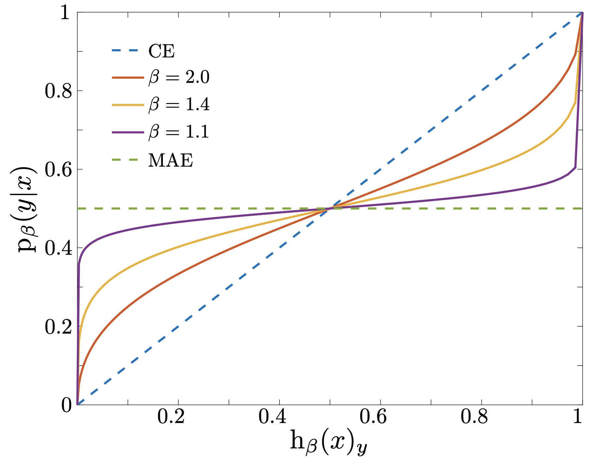

MRCpy.pytorch.mgce.classifier.mgce_clf¶
- class MRCpy.pytorch.mgce.classifier.mgce_clf(loss_parameter='1.4', lambda_=1e-05, deterministic=True, random_state=None, optimizer=None, scheduler=None, model=None, device='cuda')[source]¶
Minimax Generalized Cross-Entropy (MGCE).
This class implements a PyTorch-based Minimax Risk Classifier (MRC) using \(\alpha\)-losses (\(\ell_\alpha\)), a convex surrogate loss defined over classification margins.
The classifier solves the minimax risk problem:
\[\mathrm{h}^{\mathcal{U}_2} \in \arg\min_{\mathrm{h}} \max_{\mathrm{p} \in \mathcal{U}_2} \ell(\mathrm{h}, \mathrm{p})\]which finds the classifier \(\mathrm{h}\) that minimizes the worst-case expected \(\ell\)-loss over an uncertainty set \(\mathcal{U}_2\) of distributions. This provides theoretical performance guarantees even when the true data distribution is unknown.
The uncertainty set \(\mathcal{U}_2\) is defined by fixing the marginal distribution of features to the empirical marginal and bounding the expectations of the feature mappings \(\Phi(x, y)\):
\[\mathcal{U}_2 = \left\{ \mathrm{p} : \mathrm{p}_x = \hat{\mathrm{p}}_x, \; \left| \mathbb{E}_{\mathrm{p}}[\Phi(x,y)] - \boldsymbol{\tau} \right| \leq \boldsymbol{\lambda} \right\}\]where \(\hat{\mathrm{p}}_x\) is the empirical marginal distribution of features, \(\boldsymbol{\tau}\) are the empirical mean estimates, and \(\boldsymbol{\lambda}\) controls the size of the uncertainty set based on the estimation accuracy.
The \(\alpha\)-loss family, indexed by \(\alpha \geq 1\), smoothly interpolates between well-known losses:
\(\alpha = 1\): the 0-1 loss \(\ell_1(\mathrm{h}, y) = 1 - \mathrm{h}_y(x)\), which directly measures classification error but is non-smooth.
\(\alpha \to \infty\): the log-loss \(\ell_\infty(\mathrm{h}, y) = -\log \mathrm{h}_y(x)\) (cross-entropy), which is smooth and easy to optimize.
For intermediate \(\alpha > 1\):
\[\ell_\alpha(\mathrm{h}(x), y) = \frac{\alpha}{\alpha - 1} \left(1 - \mathrm{h}_y(x)^{(\alpha-1)/\alpha}\right)\]Smaller \(\alpha\) values stay closer to the 0-1 loss (more robust), while larger values behave more like log-loss (smoother optimization).
See [1] for further details. Following [1], the implementation uses the parameter \(\beta = \alpha / (\alpha-1)\), so that \(\beta = 1\) corresponds to the 0-1 loss (\(\alpha \to \infty\)) and \(\beta \to \infty\) corresponds to the log-loss (\(\alpha = 1\)). The
loss_parameterargument accepts \(\beta\) values directly.- Parameters:
- loss_parameterfloat, default=1.4
The \(\beta = \alpha / (\alpha-1)\) parameter for the \(\alpha\)-loss function. When beta=0 (alpha=1), it corresponds to 0-1 loss. Larger beta values provide smoother approximations closer to log-loss (cross-entropy). Typical values are in the range [1.0, 11.0].
- lambda_float, default=1e-5
L1 regularization strength applied to model parameters. In the minimax framework, large lambda implies bigger uncertainty sets with better generalization. The implementation uses the same lambda for all the model parameters (features).
- deterministicbool, default=True
Whether predictions should be deterministic. When True, uses argmax for prediction. When False, samples from the predicted probability distribution.
- random_stateint or None, default=None
Random seed for reproducible results. Used for weight initialization and stochastic operations.
- optimizertorch.optim.Optimizer or None, default=None
PyTorch optimizer instance for training. If None, must be provided during training or set as an attribute before calling fit().
- schedulertorch.optim.lr_scheduler or None, default=None
Learning rate scheduler for adaptive learning rate adjustment during training. Optional parameter.
- modeltorch.nn.Module or None, default=None
PyTorch neural network model to be trained. Must be provided either during initialization or before calling fit().
- devicestr, default=’cuda’
Device for computation (‘cuda’ for GPU, ‘cpu’ for CPU). Automatically falls back to CPU if CUDA is not available.
See also
MRCpy.pytorch.mgce.loss.mgce_loss\(\alpha\)-loss function used by this classifier.
References
Examples
Basic usage with a simple neural network:
>>> import torch >>> import torch.nn as nn >>> from torch.utils.data import DataLoader, TensorDataset >>> from MRCpy.pytorch.mgce.classifier import mgce_clf >>> >>> # Create a simple model >>> model = nn.Sequential( ... nn.Linear(10, 64), ... nn.ReLU(), ... nn.Linear(64, 3) ... ) >>> >>> # Create optimizer >>> optimizer = torch.optim.Adam(model.parameters(), lr=0.001) >>> >>> # Initialize classifier with beta=1.4 >>> clf = mgce_clf( ... loss_parameter=1.4, ... lambda_=1e-5, ... model=model, ... optimizer=optimizer, ... device='cuda' ... ) >>> >>> # Create dummy data >>> X = torch.randn(100, 10) >>> y = torch.randint(0, 3, (100,)) >>> dataset = TensorDataset(X, y) >>> dataloader = DataLoader(dataset, batch_size=32) >>> >>> # Train the model >>> results = clf.fit(dataloader, n_epochs=10, verbose=True) >>> print(f"Final training accuracy: {results['train_acc'][-1]:.2f}%")
Training with validation:
>>> results = clf.fit( ... train_loader, ... validate=True, ... val_dataloader=val_loader, ... save_model_weights='best' ... ) >>> print(f"Best validation accuracy: {max(results['val_acc']):.2f}%")
Compute probabilities for test samples:
>>> test_data = torch.randn(10, input_dim) >>> probabilities = clf.predict_proba(test_data) >>> print(f"Shape: {probabilities.shape}") # (10, n_classes) >>> print(f"First sample probabilities: {probabilities[0]}")
Deterministic predictions:
>>> predictions = clf.predict(test_data) >>> print(f"Predicted classes: {predictions}")
Stochastic predictions:
>>> clf_stochastic = mgce_clf(deterministic=False, ...) >>> clf_stochastic.fit(train_loader) >>> pred1 = clf_stochastic.predict(test_data) >>> pred2 = clf_stochastic.predict(test_data) # May differ from pred1
- Attributes:
- is_fitted_bool
Whether the classifier has been fitted to training data.
- loss_parameterstr or float
The \(\beta\) parameter for the loss function.
- lambda_float
L1 regularization strength.
- modeltorch.nn.Module
The neural network model being trained.
- optimizertorch.optim.Optimizer
Optimizer used for training.
- devicestr
Device used for computation.
Methods
fit(train_dataloader[, pretrained, …])Fit the MRC model using the provided training data.
Compute worst-case class probabilities.
predict(X)Predict class labels for the given input samples.
Compute class probabilities for the given input samples.
- __init__(loss_parameter='1.4', lambda_=1e-05, deterministic=True, random_state=None, optimizer=None, scheduler=None, model=None, device='cuda')[source]¶
Initialize self. See help(type(self)) for accurate signature.
- fit(train_dataloader, pretrained=False, grad_bound=5.0, n_epochs=100, verbose=True, validate=False, val_dataloader=None, compute_ece=True, bins=15, save_model_weights='best', path='./')[source]¶
Fit the MRC model using the provided training data.
This method trains the neural network using the minimax risk optimization corresponding with \(\alpha\)-losses. It supports both training-only and training-with-validation modes.
- Parameters:
- train_dataloadertorch.utils.data.DataLoader
DataLoader containing the training data. Each batch should return (inputs, labels) where inputs are feature tensors and labels are class indices.
- pretrainedbool, default=False
Whether to use a pretrained model. If True, assumes the model has been pre-trained and may adjust training parameters accordingly.
- grad_boundfloat, default=5.0
Maximum gradient norm for gradient clipping. Helps prevent gradient explosion during training.
- n_epochsint, default=100
Number of training epochs to run.
- verbosebool, default=True
Whether to print training progress and metrics during training.
- validatebool, default=False
Whether to perform validation during training. If True, val_dataloader must be provided.
- val_dataloadertorch.utils.data.DataLoader or None, default=None
DataLoader containing validation data. Required if validate=True. Should have the same format as train_dataloader.
- compute_ecebool, default=True
Whether to compute Expected Calibration Error (ECE) during validation. Only used if validate=True.
- binsint, default=15
Number of bins to use for ECE computation. Only used if compute_ece=True and validate=True.
- save_model_weights{‘best’, ‘last’, ‘None’}, default=’best’
Strategy for saving model weights: - ‘best’: Save weights from epoch with highest validation accuracy - ‘last’: Save weights from the final epoch - ‘None’: Don’t save any weights
- pathstr, default=”./”
Directory path where model weights should be saved (if applicable).
- Returns:
- dict
Dictionary containing training metrics: - ‘train_loss’: List of training losses per epoch - ‘train_acc’: List of training accuracies per epoch - ‘val_loss’: List of validation losses per epoch (if validate=True) - ‘val_acc’: List of validation accuracies per epoch (if validate=True)
- Raises:
- ValueError
If invalid save_model_weights option is provided or if validation is enabled but val_dataloader is None.
- RuntimeError
If model or optimizer are not properly initialized.
Examples
See class-level examples.
- get_worst_case_probs(X)[source]¶
Compute worst-case class probabilities.
This method computes the worst-case probability distribution \(\mathrm{p}^*\) corresponding to the minimax solution. Given the prediction probabilities \(\mathrm{h}(x)\) from
predict_proba(), the worst-case probabilities are:\[\mathrm{p}^*_y(x) = \frac{\mathrm{h}_y(x)^{(\beta-1)/\beta}} {\sum_{y'} \mathrm{h}_{y'}(x)^{(\beta-1)/\beta}}\]- Parameters:
- Xarray-like of shape (n_samples, n_features)
Input samples for which to compute worst-case probabilities. Should be preprocessed in the same way as the training data.
- Returns:
- worst_case_probsndarray of shape (n_samples, n_classes)
Worst-case class probabilities for each input sample. Each row sums to 1.0.
- Raises:
- NotFittedError
If the classifier has not been fitted yet.
- ValueError
If the input data format is invalid or incompatible with the trained model.
See also
predict_probaCompute prediction probabilities \(\mathrm{h}(x)\).
Notes
The figure below illustrates the relationship between worst-case and prediction probabilities for different \(\beta\) values.

- predict(X)[source]¶
Predict class labels for the given input samples.
This method predicts the most likely class for each input sample using the trained model. The prediction behavior depends on the deterministic parameter set during initialization:
If deterministic=True: Returns the class with highest logit value
If deterministic=False: Samples from the predicted probability distribution
- Parameters:
- Xarray-like of shape (n_samples, n_features)
Input samples for which to predict class labels. Should be preprocessed in the same way as the training data.
- Returns:
- predictionsndarray of shape (n_samples,)
Predicted class labels for each input sample as integer indices in the range [0, num_classes-1].
- Raises:
- NotFittedError
If the classifier has not been fitted yet (i.e., fit() has not been called).
- ValueError
If the input data format is invalid or incompatible with the trained model.
See also
predict_probaGet class probabilities instead of hard predictions
Examples
See class-level examples.
- predict_proba(X)[source]¶
Compute class probabilities for the given input samples.
This method computes the conditional probabilities p(y|x) for each class given the input features. The probabilities are computed using the trained model and the minimax risk framework with \(\alpha\)-losses via the loss function’s get_probs method.
- Parameters:
- Xarray-like of shape (n_samples, n_features)
Input samples for which to compute class probabilities. Should be preprocessed in the same way as the training data.
- Returns:
- probabilitiesndarray of shape (n_samples, n_classes)
Class probabilities for each input sample. Each row sums to 1.0 and represents the probability distribution over all classes for the corresponding input sample, computed using the \(\alpha\)-loss framework.
- Raises:
- NotFittedError
If the classifier has not been fitted yet (i.e., fit() has not been called).
- ValueError
If the input data format is invalid or incompatible with the trained model.
Notes
This method uses the \(\alpha\)-loss framework’s get_probs function to compute probabilities, ensuring consistency with the training loss function rather than using standard softmax normalization.
Examples
See class-level examples.
{kind=link}